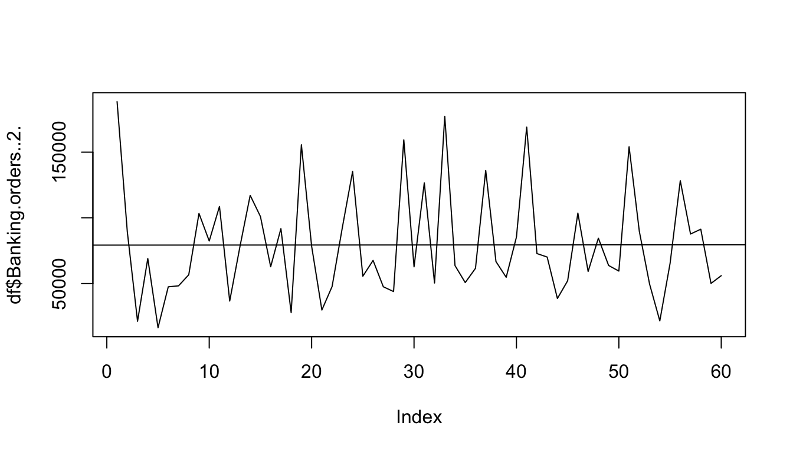
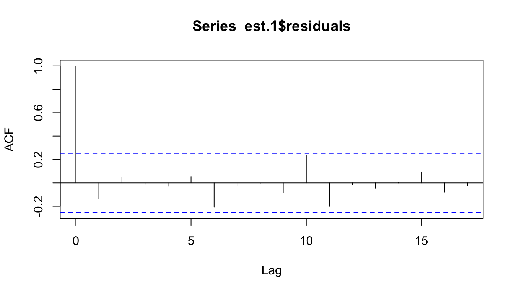
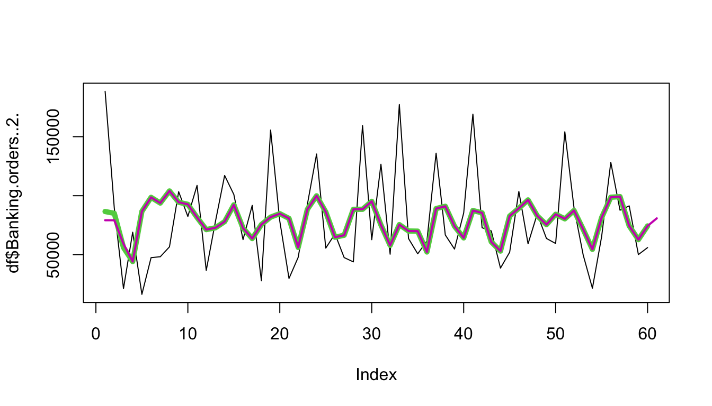
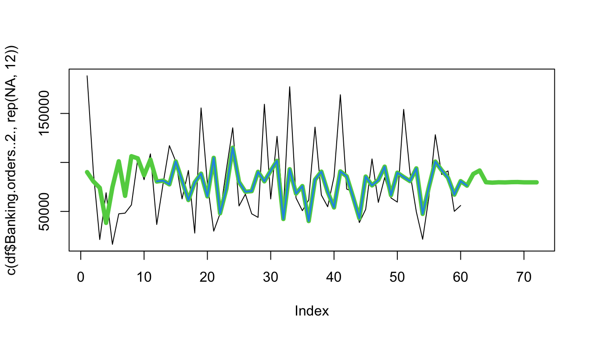
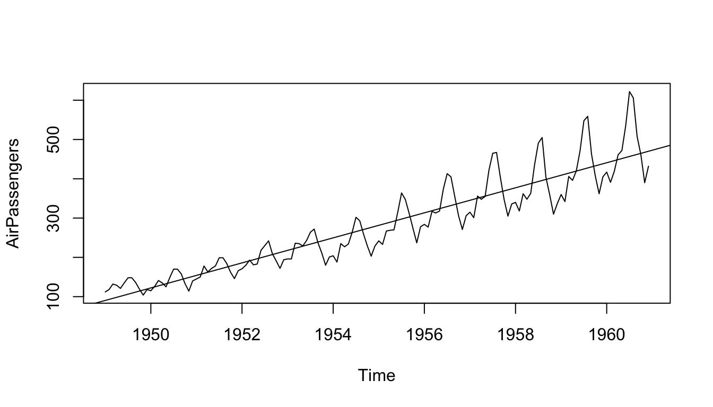
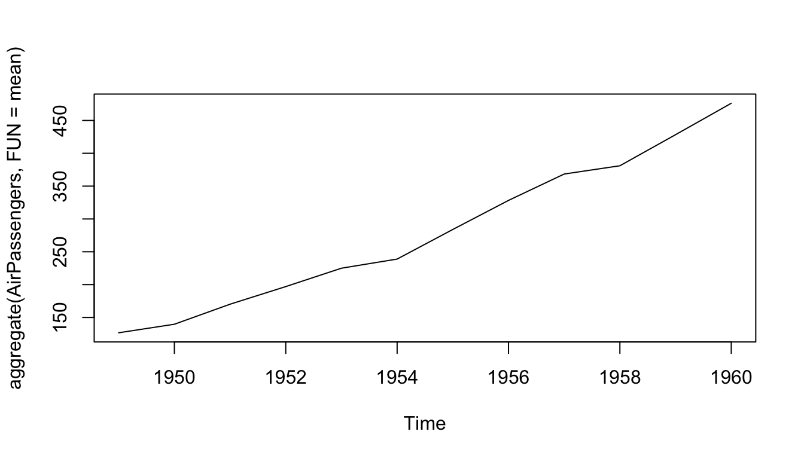
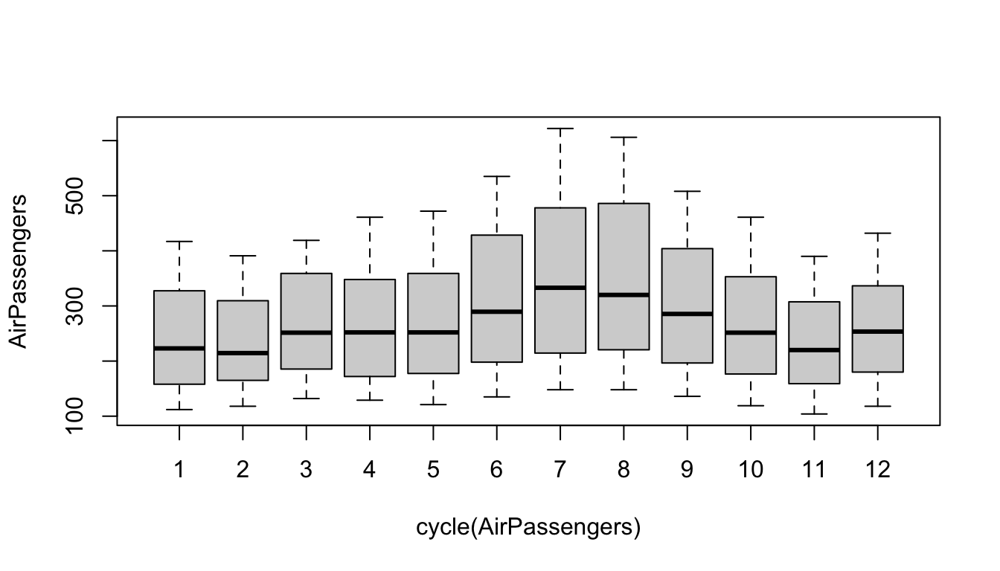
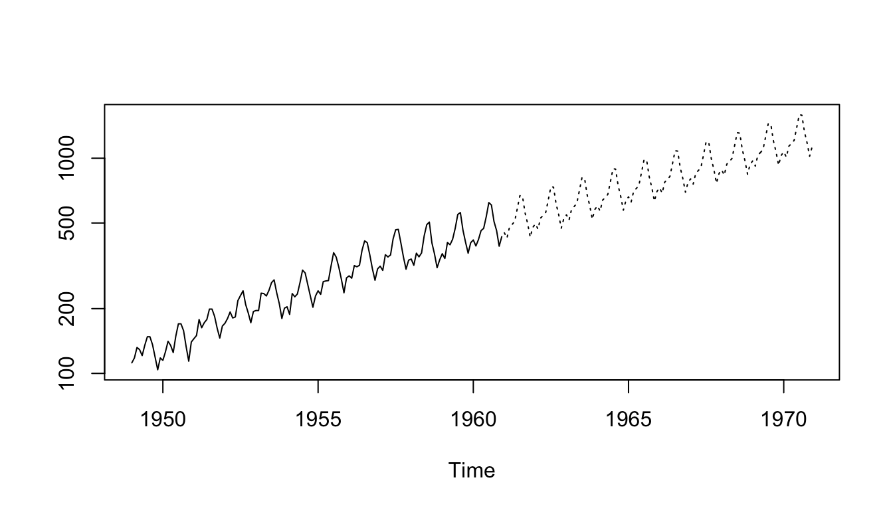

simple case
general exploration of TS
First we plot the data in chronological order. Since we will model this as an AR process, we look to the PACF to set a cutoff on the order of the process
The database was collected during 60 days, this is a real database of a Brazilian company of large logistics. Twelve predictive attributes and a target that is the total of orders for daily.
Data looks stationary.
AR
As name suggest autoregression is regression made upon past values. The simplest autoregression model is known as AR(1): \(y_t=b_0+b_1*y_{t-1}+e_t\) \(e_t\) is changeable within time error with stable variance and mean = 0.
selecting parameter of AR
We can see that the value of the PACF crosses the 5% significance threshold at lag 3. This is consistent with the results from the ar() function available in R’s stats package. ar() automatically chooses the order of an autoregressive model if one is not specified:
Notice that the ar() function has also provided us with the coefficients for the model. We may, however, want to limit the coefficients. For example, looking at the PACF, we might wonder whether we really want to include a coefficient for the lag – 1 term or whether we should assign that term a mandatory coefficient of 0 given that its PACF value is well below the threshold used for significance. In this case, we can use the arima() function also from the stats package. Here, we demonstrate how to call the function to fit an AR(3), by setting the order parameter to c(3, 0, 0), where 3 refers to the order of the AR component
Show the code
est <- arima(x = df$Banking.orders..2.,order = c(3, 0, 0))
est
##
## Call:
## arima(x = df$Banking.orders..2., order = c(3, 0, 0))
##
## Coefficients:
## ar1 ar2 ar3 intercept
## -0.1358 -0.2013 -0.3176 79075.350
## s.e. 0.1299 0.1289 0.1296 2981.124
##
## sigma^2 estimated as 1413818670: log likelihood = -717.42, aic = 1444.83To inject prior knowledge or opinion into our model, we can constraint a coefficient to be 0. For example, if we want to constrain the lag – 1 term to remain 0 in our model, we use the following call:
We now inspect our model performance on our training data to assess the goodness of fit of our model to this data set. We can do this in two ways. First, we plot the ACF of the residuals (that, is the errors) to see if there is a pattern of self-correlation that our model does not cover.
Plotting the residuals is quite simple thanks to the output of the arima() function

Show the code
None of the values of the ACF cross the significance threshold.
We do not see a pattern of self-correlation here among the residuals (i.e., the error terms). If we had seen such a pattern, we would likely want to return to our original model and consider including additional terms to add complexity to account for the significant autocorrelation of the residuals.
forecasting 1 time step ahead
applying by hand
what’s important there are different type of parametrizations of ARIMA models
There are multiple (equivalent) parametrizations for ARIMA models. There’s the one you quote (sometimes called the ARMAX parametrization):
\(y_t = \phi y_{t-1} + c + \epsilon_t\)
And the equivalent regression with ARMA errors parametrization:
\((y_t - c') = \phi (y_{t-1} - c') + \epsilon_t\)
The forecast package uses the second parametrization.
The package author explains the difference between the two parametrizations and the rationale for choosing this one on his blog. Mostly, when adding other regressors (other than the constant), this version is easier to interpret. Since the function forecast::Arima allows for other regressors, it makes sense to treat them all in the same way.
Show the code
est.1$coef['intercept']
## intercept
## 79190.71
est.1$coef['ar1']
## ar1
## 0
est.1$coef['ar2']
## ar2
## -0.1831204
est.1$coef['ar3']
## ar3
## -0.3031044
x<-c(NA,NA,NA,df$Banking.orders..2.)
y_pred = zoo::rollapply(zoo(x),
width=3,
FUN=function(w){
est.1$coef['intercept'] +
dplyr::coalesce(est.1$coef['ar1']*(w[3]-est.1$coef['intercept']),0) +
dplyr::coalesce(est.1$coef['ar2']*(w[2]-est.1$coef['intercept']),0) +
dplyr::coalesce(est.1$coef['ar3']*(w[1]-est.1$coef['intercept']),0)
},
partial = FALSE
)
y_pred <- c(as.vector(y_pred))Show the code

Now let’s think about the quality of the forecast. If we calculate the correlation between the predicted value and the actual value, we get 0.29. This is not bad in some contexts, but remember that sometimes differencing the data will remove what seemed like a strong relationship and replace it with one that is essentially random. This will be the case particularly if the data was not truly stationary when we fit it, so that an unidentified trend masquerades as good model performance when it is actually a trait of the data we should have addressed before modeling.
We can difference both the series and the predicted values to see whether the change from one time period to the next is well predicted by the model. Even after differenc‐ ing, our predictions and the data show similar patterns, suggesting our model is a meaningful one
Forecasting many steps into the future
Looking back at the original plot of the forecast versus actual values, we see that the main difference between the forecast and the data is that the forecast is less variable than the data.
It may predict the direction of the future correctly, but not the scale of the change from one time period to another. This is not a problem per se but rather reflects the fact that forecasts are means of the predicted distributions and so necessarily will have lower variability than sampled data.
As you can see in the Figure below, the variance of the prediction decreases with increasing forward horizon. The reason for this—which highlights an important limitation of the model—is that the further forward in time we go, the less the actual data matters because the coefficients for input data look only at a finite previous set of time points (in this model, going back only to lag – 3; i.e., time – 3). The future prediction approaches the mean value of the series as the time horizon grows, and hence the variance of both the error term and of the forecast values shrinks to 0 as the forecast values tend toward the unconditional mean value.
calculating forecast by hand
Below how prediction for point 8 in time series in calculcated using window_width=3
Show the code
ts<-df$Banking.orders..2.
y_hat_6_window_1 = est.1$coef['intercept'] +
dplyr::coalesce(est.1$coef['ar1']*(ts[5]-est.1$coef['intercept']),0) +
dplyr::coalesce(est.1$coef['ar2']*(ts[4]-est.1$coef['intercept']),0) +
dplyr::coalesce(est.1$coef['ar3']*(ts[3]-est.1$coef['intercept']),0)
y_hat_7_window_2 = est.1$coef['intercept'] +
dplyr::coalesce(est.1$coef['ar1']*(y_hat_6-est.1$coef['intercept']),0) +
dplyr::coalesce(est.1$coef['ar2']*(ts[5]-est.1$coef['intercept']),0) +
dplyr::coalesce(est.1$coef['ar3']*(ts[4]-est.1$coef['intercept']),0)
## Error in list2(...): object 'y_hat_6' not found
y_hat_8_window_3 = est.1$coef['intercept'] +
dplyr::coalesce(est.1$coef['ar1']*(y_hat_7_window_2-est.1$coef['intercept']),0) +
dplyr::coalesce(est.1$coef['ar2']*(y_hat_6-est.1$coef['intercept']),0) +
dplyr::coalesce(est.1$coef['ar3']*(ts[5]-est.1$coef['intercept']),0)
## Error in list2(...): object 'y_hat_7_window_2' not found
fitted(est.1,h=3)[8] == y_hat_8_window_3
## Error in eval(expr, envir, enclos): object 'y_hat_8_window_3' not foundBelow show how variance is diminishing continously along broader and broader horizont width.
MA model
Do not confuse the MA model (moving average model) with a moving average. They are not the same thing.
MA models are by definition weakly stationary.
A moving average model can be expressed similarly to an autoregressive model except that the terms included in the linear equation refer to present and past error terms rather than present and past values of the process itself. So an MA model of order q is expressed as:
\(yt = μ +e_t +θ_1 × e_{t-1} +θ_2 × e_{t-2}...+θ_q × e_{t-q}\)
Economists talk about these error terms as “shocks” to the system,
while someone with an electrical engineering background could talk about this as a series of impulses and the model itself as a finite impulse response filter, meaning that the effects of any particular impulse remain only for a finite period of time.
The wording is unimportant, but the concept of many independent events at different past times affecting the current value of the process, each making an individual contribution, is the main idea.
selecting parameter of AR
We see significant values at lags 3 and 9, so we fit an MA model with these lags.
Show the code
ma.est = arima(x = df$Banking.orders..2.,
order = c(0, 0, 9),
fixed = c(0, 0, NA, rep(0, 5), NA, NA))
ma.est
##
## Call:
## arima(x = df$Banking.orders..2., order = c(0, 0, 9), fixed = c(0, 0, NA, rep(0,
## 5), NA, NA))
##
## Coefficients:
## ma1 ma2 ma3 ma4 ma5 ma6 ma7 ma8 ma9 intercept
## 0 0 -0.4725 0 0 0 0 0 -0.0120 79689.809
## s.e. 0 0 0.1459 0 0 0 0 0 0.1444 2674.593
##
## sigma^2 estimated as 1399698249: log likelihood = -717.31, aic = 1442.61Note that the Box.test() input requires us to specify the number of degrees of freedom— that is, how many model parameters were free to be estimated rather than being con‐ strained to a specific value. In this case, the free parameters were the intercept as well as the MA3 and MA9 terms.
We cannot reject the null hypothesis that there is no temporal correlation between residual points.
calculating forecast by hand
this is equasion for proces MA(1), based on this equasation parameters are calculated
\(y_t = μ + θ_1 × e_{t -1} + e_t\) Then if i want to predict future one point forward i am getting following equasation:
\(y_{t+1} = μ + θ_1 × e_{t} + e_{t+1}\).
Since I don’t know value of$ e_{t+1}$ it is diminishing and i finished with following equsation
$y_{t+1} = μ + θ_1 × e_{t} $.
Show the code
fitted(ma.est, h=1)[11]
## [1] 102868.2
fitted(ma.est)
## Time Series:
## Start = 1
## End = 60
## Frequency = 1
## [1] 90116.64 80626.91 74090.45 38321.61 74734.77 101153.20 65930.90
## [8] 106351.80 104138.05 86938.99 102868.16 80502.02 81466.01 77619.15
## [15] 100984.93 81463.10 61622.54 79660.81 88563.91 65370.99 104679.89
## [22] 48047.39 73070.29 115034.16 80034.03 70052.29 70728.85 90437.86
## [29] 80684.44 91533.59 101668.18 42273.27 93055.40 68187.65 75863.50
## [36] 40195.15 82368.91 90605.60 69924.83 54032.55 90866.20 85839.41
## [43] 64932.70 43030.64 85575.32 76561.14 82047.95 95683.35 66553.13
## [50] 89532.20 85102.64 80937.97 93926.74 47468.84 75223.67 100887.60
## [57] 92059.32 84459.85 67112.16 80917.23
ma.est$residuals
## Time Series:
## Start = 1
## End = 60
## Frequency = 1
## [1] 98294.3562 8834.0914 -52785.4519 30732.3920 -58323.7702 -53631.2031
## [7] -17661.8971 -49686.8020 -762.0520 -4543.9878 5850.8372 -43809.0231
## [13] -3313.0118 39517.8450 63.0688 -18664.1029 30161.4574 -51787.8125
## [19] 67053.0856 13007.0069 -74805.8883 -254.3946 19630.7094 20279.8374
## [25] -24450.0269 -2435.2854 -23165.8452 -46507.8590 78688.5556 -28801.5938
## [31] 24963.8186 8159.7332 84173.5994 -4488.6489 -25100.4994 21397.8481
## [37] 53666.0948 -23860.5964 -15152.8251 31345.4544 78221.8009 -12999.4118
## [43] 5258.2953 -4384.6369 -33463.3232 27005.8621 -22816.9525 -11125.3541
## [49] -2775.1259 -30019.2045 69041.3579 8766.0307 -44282.7441 -25895.8370
## [55] -10024.6734 27381.4011 -4351.3204 6907.1472 -17000.1616 -24902.2280
ts<-df$Banking.orders..2.
ma.est$coef['intercept']
## intercept
## 79689.81
res=c()
h=1
for (i in seq(11,60)){
res = c(res,
ma.est$coef['intercept'] + # ma.est$residuals[i] tego nie wliczam bo nie znam w błedu 1 punkt w przyszłość
ma.est$coef[['ma3']] * ma.est$residuals[i-3 +h] +
ma.est$coef[['ma9']] * ma.est$residuals[i-9 +h]
)
}forecasting 1 time step ahead
Show the code
fitted(ma.est, h=1)
## Time Series:
## Start = 1
## End = 60
## Frequency = 1
## [1] 90116.64 80626.91 74090.45 38321.61 74734.77 101153.20 65930.90
## [8] 106351.80 104138.05 86938.99 102868.16 80502.02 81466.01 77619.15
## [15] 100984.93 81463.10 61622.54 79660.81 88563.91 65370.99 104679.89
## [22] 48047.39 73070.29 115034.16 80034.03 70052.29 70728.85 90437.86
## [29] 80684.44 91533.59 101668.18 42273.27 93055.40 68187.65 75863.50
## [36] 40195.15 82368.91 90605.60 69924.83 54032.55 90866.20 85839.41
## [43] 64932.70 43030.64 85575.32 76561.14 82047.95 95683.35 66553.13
## [50] 89532.20 85102.64 80937.97 93926.74 47468.84 75223.67 100887.60
## [57] 92059.32 84459.85 67112.16 80917.23MA models exhibit strong mean reversion and so forecasts rapidly converge to the mean of the process. This makes sense given that the process is considered to be a function of white noise.
Show the code

If you forecast beyond the range of the model established by its order, the forecast will necessarily be the mean of the process by definition of the process. Consider an MA(1) model: \(yt = μ + θ1 × et -1 + et\) To predict one time step in the future, our estimate for \(y_{t+1} = μ + θ1 × yt + et\).
If we want to predict two time steps in the future, our estimate is: \(E(y_{t+2} =μ+e_{t+2} +θ_1 ×e_{t+1})=μ+0+θ_1 ×0=μ\)
With an MA(1) process we cannot offer an informed prediction beyond one step ahead, and for an MA(q) process in general we cannot offer a more informed predic‐ tion beyond q steps than the mean value emitted by the process. By informed predic‐ tion, I mean one in which our most recent measurements have an impact on the forecast.
We can see this by producing predictions with our MA(9) model that we just fit, and for which we now seek predictions 10 time steps ahead.
When we attempt to predict 10 time steps into the future, we predict the mean for every time step
more complicated case
Show the code
class(AirPassengers)
## [1] "ts"
#This is the start of the time series
start(AirPassengers)
## [1] 1949 1
#This is the end of the time series
end(AirPassengers)
## [1] 1960 12
#The cycle of this time series is 12months in a year
frequency(AirPassengers)
## [1] 12
summary(AirPassengers)
## Min. 1st Qu. Median Mean 3rd Qu. Max.
## 104.0 180.0 265.5 280.3 360.5 622.0Show the code

Show the code
cycle(AirPassengers)
## Jan Feb Mar Apr May Jun Jul Aug Sep Oct Nov Dec
## 1949 1 2 3 4 5 6 7 8 9 10 11 12
## 1950 1 2 3 4 5 6 7 8 9 10 11 12
## 1951 1 2 3 4 5 6 7 8 9 10 11 12
## 1952 1 2 3 4 5 6 7 8 9 10 11 12
## 1953 1 2 3 4 5 6 7 8 9 10 11 12
## 1954 1 2 3 4 5 6 7 8 9 10 11 12
## 1955 1 2 3 4 5 6 7 8 9 10 11 12
## 1956 1 2 3 4 5 6 7 8 9 10 11 12
## 1957 1 2 3 4 5 6 7 8 9 10 11 12
## 1958 1 2 3 4 5 6 7 8 9 10 11 12
## 1959 1 2 3 4 5 6 7 8 9 10 11 12
## 1960 1 2 3 4 5 6 7 8 9 10 11 12
#This will print the cycle across years.
plot(aggregate(AirPassengers,FUN=mean))
Show the code

Important Inferences
The year on year trend clearly shows that the #passengers have been increasing without fail.
The variance and the mean value in July and August is much higher than rest of the months.
Even though the mean value of each month is quite different their variance is small. Hence, we have strong seasonal effect with a cycle of 12 months or less.
Exploring data becomes most important in a time series model – without this exploration, you will not know whether a series is stationary or not. As in this case we already know many details about the kind of model we are looking out for.
Solving unstationary issues
We know that we need to address two issues before we test stationary series. One, we need to remove unequal variances. We do this using log of the series. Two, we need to address the trend component. We do this by taking difference of the series. Now, let’s test the resultant series.
Show the code
tseries::adf.test(diff(log(AirPassengers)), alternative="stationary", k=0)
##
## Augmented Dickey-Fuller Test
##
## data: diff(log(AirPassengers))
## Dickey-Fuller = -9.6003, Lag order = 0, p-value = 0.01
## alternative hypothesis: stationary
log(AirPassengers)
## Jan Feb Mar Apr May Jun Jul Aug
## 1949 4.718499 4.770685 4.882802 4.859812 4.795791 4.905275 4.997212 4.997212
## 1950 4.744932 4.836282 4.948760 4.905275 4.828314 5.003946 5.135798 5.135798
## 1951 4.976734 5.010635 5.181784 5.093750 5.147494 5.181784 5.293305 5.293305
## 1952 5.141664 5.192957 5.262690 5.198497 5.209486 5.384495 5.438079 5.488938
## 1953 5.278115 5.278115 5.463832 5.459586 5.433722 5.493061 5.575949 5.605802
## 1954 5.318120 5.236442 5.459586 5.424950 5.455321 5.575949 5.710427 5.680173
## 1955 5.488938 5.451038 5.587249 5.594711 5.598422 5.752573 5.897154 5.849325
## 1956 5.648974 5.624018 5.758902 5.746203 5.762051 5.924256 6.023448 6.003887
## 1957 5.752573 5.707110 5.874931 5.852202 5.872118 6.045005 6.142037 6.146329
## 1958 5.828946 5.762051 5.891644 5.852202 5.894403 6.075346 6.196444 6.224558
## 1959 5.886104 5.834811 6.006353 5.981414 6.040255 6.156979 6.306275 6.326149
## 1960 6.033086 5.968708 6.037871 6.133398 6.156979 6.282267 6.432940 6.406880
## Sep Oct Nov Dec
## 1949 4.912655 4.779123 4.644391 4.770685
## 1950 5.062595 4.890349 4.736198 4.941642
## 1951 5.214936 5.087596 4.983607 5.111988
## 1952 5.342334 5.252273 5.147494 5.267858
## 1953 5.468060 5.351858 5.192957 5.303305
## 1954 5.556828 5.433722 5.313206 5.433722
## 1955 5.743003 5.613128 5.468060 5.627621
## 1956 5.872118 5.723585 5.602119 5.723585
## 1957 6.001415 5.849325 5.720312 5.817111
## 1958 6.001415 5.883322 5.736572 5.820083
## 1959 6.137727 6.008813 5.891644 6.003887
## 1960 6.230481 6.133398 5.966147 6.068426We see that the series is stationary enough to do any kind of time series modelling.
Next step is to find the right parameters to be used in the ARIMA model. We already know that the ‘d’ component is 1 as we need 1 difference to make the series stationary. We do this using the Correlation plots. Following are the ACF plots for the series:
Clearly, ACF plot cuts off after the first lag. Hence, we understood that value of p should be 0 as the ACF is the curve getting a cut off. While value of q should be 1 or 2. After a few iterations, we found that (0,1,1) as (p,d,q) comes out to be the combination with least AIC and BIC.
Show the code
(fit <- arima(log(AirPassengers), c(0, 1, 1),seasonal = list(order = c(0, 1, 1), period = 12)))
##
## Call:
## arima(x = log(AirPassengers), order = c(0, 1, 1), seasonal = list(order = c(0,
## 1, 1), period = 12))
##
## Coefficients:
## ma1 sma1
## -0.4018 -0.5569
## s.e. 0.0896 0.0731
##
## sigma^2 estimated as 0.001348: log likelihood = 244.7, aic = -483.4Let’s fit an ARIMA model and predict the future 10 years. Also, we will try fitting in a seasonal component in the ARIMA formulation. Then, we will visualize the prediction along with the training data. You can use the following code to do the same :
Show the code
(fit <- arima(log(AirPassengers), c(0, 1, 1),seasonal = list(order = c(0, 1, 1), period = 12)))
##
## Call:
## arima(x = log(AirPassengers), order = c(0, 1, 1), seasonal = list(order = c(0,
## 1, 1), period = 12))
##
## Coefficients:
## ma1 sma1
## -0.4018 -0.5569
## s.e. 0.0896 0.0731
##
## sigma^2 estimated as 0.001348: log likelihood = 244.7, aic = -483.4
pred <- predict(fit, n.ahead = 10*12)
ts.plot(AirPassengers,2.718^pred$pred, log = "y", lty = c(1,3))